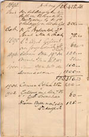
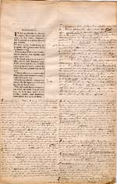
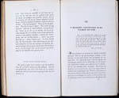
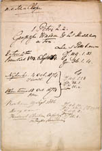

Beets 1903 - 2003
Tentoonstelling van 13 maart tot 11 mei 2003 in de Universiteitsbibliotheek
Samenstelling: C.J. Stiekema en A.Th. Bouwman
Tentoongestelde stukken
De preken van Beets werden zeer gewaardeerd, met name door hun eenvoudige maar diep gevoelde vroomheid en de zuivere stijl waarin ze vervat waren. In de jaren veertig en vijftig zijn vele preken in afleveringen gepubliceerd en verzameld tot twee reeksen Stichtelijke uren. Hij schreef ook theologische tractaten en boekbesprekingen waarin hij ten opzichte van de scherpe godsdienstige tegenstellingen van zijn tijd (Réveil, schoolstrijd, herstel van de bisschoppelijke hiërarchie) een gematigde positie innam.
|  | 5.1. Notitieboekje met de honoraria tussen 1834 en 1902 voor zijn publicaties ontvangen. In totaal werden verdiende Beets met zijn in druk verschenen werken, inclusief alle herdrukken, bijna 60.000 gulden, een voor die tijd zeer hoog bedrag. [LTK BEETS F 2] |
|  | 5.2. Doorschoten exemplaar van een Statenbijbel (Londen [etc.]: Bijbelgenootschap, 1845), met aantekeningen van Beets. Getoond is het vierde en laatste deel (Mattheus I – Openbaring XXII). [LTK BEETS C 31] |
|  | 5.3. Rede uit de eerste uitgave van de Stichtelijke uren, het grote succes naast de Camera Obscura in de negentiende eeuw (Haarlem: Erven F. Bohn, 1848-1883). [1001 C 1-9] |
|  | 5.4. Preek, voor het eerst gehouden op 6 september 1874 te Utrecht. Er zijn zestig preken in handschrift uit de periode 1840-1892 bewaard gebleven. [LTK BEETS C 2] |
| vorige pagina | volgende pagina |